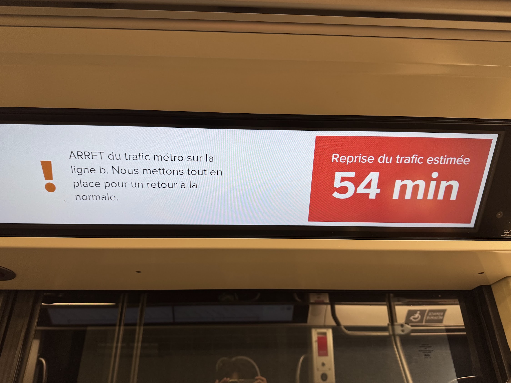

レンヌで地下鉄に閉じ込められた
６月に出張で訪れたレンヌ、街の中心にあるエアビーに泊まり、少し離れたところにあるINRIAまで、朝は徒歩（５０分）、帰りは地下鉄（４０分）で移動していた。
が、最終日の帰り、地下鉄に乗っていると、駅と駅の間で急停車。車内の電気も消える。なかなか不安。ちょっとしたトラブルなのか、どこかで事件があったのか、はたまたストなのか（ストの場合、いくらなんでも駅までは運行してくれると思うものの、昔、アテネでバスに乗っていて、突然ストが始まって、バス停でも何でもないところで降ろされたことがある）。とはいえ、ほとんどの乗客はいたって冷静なので、よくあることなのだろうか。
しばらくして電気は復旧。鉄道会社の職員らしき人が乗り込んできて、機械をガチャガチャやっている。そのうち、音声アナウンスや車内の案内表示もはじまったのだが、「フランス語のみ！」
ここで役立ったのはGoogle翻訳の音声入力。ずっと待機しておくわけにはいかないので、たまに音声案内が流れたら音声入力をオンにする。アナウンスに間があると、そこで入力終了となって翻訳されてしまったりして、大事そうなところが翻訳されなかったりするけれど、何もないよりははるかに安心である。「全力を尽くしてくれている」こともわかる。
さて、どうやら運転再開予定時間がアナウンスされ、表示もされている。しかし、日本でも早まったり遅れたりするし、ここはフランスである。どうなるか全く読めない。再開予定まで40分くらいのタイミングで、最寄りの駅までは移動してくれたので、降車してUberを使うかどうか悩む。しかし悩んでいる間に恐ろしくUberの金額が高くなったので諦める。仕方ないので、車内でのんびり待つことに。
緊急停車から1時間と少し、ようやく無事に運転再開。運転再開まで60分と言われてから、ちょうど60分（1〜2分の誤差はあったかもしれないが）。 ここである疑問：実は10〜20分くらいで復旧していたけど、60分運行しないとアナウンスしちゃったから、復旧後も待っていただけでは？ 真相はいかに。

Yuto Miyatake
Associate Professor
Applied Mathematics, Numerical Analysis, Computational Uncertain Quantification